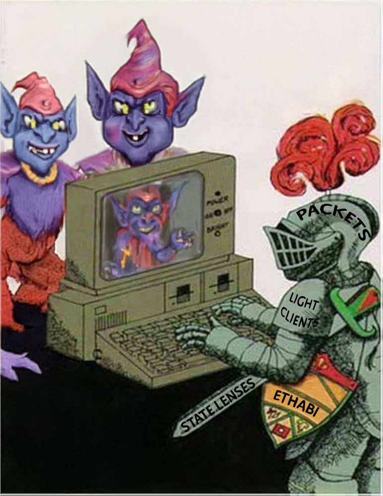

preview
Foreword
Blockchains are fundamentally about codifying agreements and adhering to what was coded. There are no political backdoors or deals behind closed doors—just one simple premise: if I can read the code of a smart contract, I know exactly what I'm getting into. This is an empowering philosophy. It creates a true meritocracy that incentivizes people to learn, research, and become intimately familiar with the financial foundation upon which the world runs.
Enabling this philosophy requires complex layers of algorithms and game theory, which ultimately provide users with an experience similar to Web2. We often hear complaints that "this is too much research, not enough product," yet without this immense foundational work, we would merely be creating an illegal financial network where founders and CEOs could arbitrarily freeze and steal funds. Between decentralized and centralized systems lie protocols masquerading as the former, seeking quick traction before exit scamming—the worst of both worlds.
The Goblin Book aims to educate readers about true decentralization: why it matters, when it matters, and what tools and knowledge are necessary to thrive in a decentralized world. Beyond this, it focuses on interoperability (or ledger-of-ledger technology). Written based on modern understanding of high-performance blockchains, this book demonstrates that we need not choose between decentralization, security, and low latency.
While this book delves into the most fundamental aspects of blockchain technology, making it a demanding read, the insights it offers are invaluable for understanding the future of decentralized systems.
Introduction
This book is intended for tech-savy readers, interested in learning extremely advanced blockchain and interoperability concepts. Although it explains some of the most complex topics in blockchain, we do try to start at the basics.
Various chapters are accompanied by coding projects. The complete version of each project is checked in our book repository.
Getting Started
Developing interoperability technology—or working across multiple chains simultaneously—requires a complex local development setup. You'll often need to run various chains and off-chain services concurrently. Consider a simple application that aggregates traffic from Ethereum, Solana, and Hyperliquid. Such an application would need to operate:
Development Environments:
- Ethereum devnet
- Arbitrum devnet (required for Hyperliquid settlement)
- Solana devnet
- Hyperliquid devnet
Services:
- Relayer
- Indexer
- Database
- Frontend
Programming Languages and Tools:
- Solidity (via solc)
- Rust
- Golang
- Typescript
- Docker
This list continues to grow as projects become more sophisticated. Managing tool versions across different developers becomes a significant challenge. Currently, there are two main approaches for handling complex setups like this: Bazel and Nix. Throughout this book, we'll use Nix—our Goblin-approved solution—to manage these development environments efficiently.
Nixos
This book heavily leverages Nix in examples to make it easier for you to build and fetch tools used in examples. Get started by installing Nix. You do not need to actually learn the Nix language to read this book, although some basic knowledge may help you out.
Following Along
Whenever we provide code examples for you to execute in your shell, the code snippet will be accompanied by a Nix tab. The Nix tab shows you the commands necessary to load the tools into your shell for executing that snippet.
For example, here is a snippet to query the Union GraphQL API, which requires graphqurl to execute. If you click on the Nix tab and copy the lines there, graphqurl will be installed in your shell.
Don't worry about bloating your system. Once you close the shell, everything that was installed will be gone again.
Here for example, we show how to query for packets using gq.
gq https://graphql.union.build/v1/graphql -q '
{
v1_ibc_union_packets(limit: 3) {
packet_hash
packet_send_block_hash
}
}
'
nix shell nixpkgs#nodePackages.graphqurl
If you decide not to use nix, do not worry. We rely mainly on common, open-source software, that can usually be installed using npm or brew. All examples can still be followed along with alternative installation methods.
Apple
Most developers building on Union use macbooks as their main development machine, in combination with lightweight *nix VMs.
When locally developing on macbooks, there's a few things to keep in mind:
- Docker does not have first class support. We recommend orbstack and our guide.
- Some applications need to be cross-compiled. For all Union-related services, we provide cross-compiled binaries. However other projects may not be as widely support.
OrbStack
OrbStack is a fast, light-weight alternative to Docker Desktop and traditional VMs for macOS. It provides a seamless way to run containers and Linux machines on your Mac with significantly better performance and resource efficiency than traditional solutions.
OrbStack integrates containerization and virtualization capabilities directly into macOS, allowing you to:
- Run Docker containers with native-like performance
- Create and manage lightweight Linux VMs
- Access containers and VMs via terminal, SSH, or VS Code
- Seamlessly share files between host and guest systems
- Use familiar Docker CLI commands without modification
Normally, these functions are not available on Apple, or do not make use of the latest Apple features, which causes performance degradation. For singular docker containers, you do not really notice this, but when for example building a relayer, you will run multiple devnets on one machine, as well as a prover. Performance is key to mimic production environments.
Dispatching an Asset Transfer
Let's dive into interoperability by performing a complex cross-chain operation programmatically. While this interoperability touches upon several technical concepts like asset standards, altVMs, indexing, light clients, and storage proofs, our main goal is to execute an end-to-end operation and understand the components involved. We'll explore the theoretical foundations in later chapters.
We will implement a TypeScript program that can manage EVM (Ethereum Virtual Machine) wallets, interact with multiple chains, and dispatch asset transfers through smart contract interactions. Finally, we will query an indexing service to trace our transfer's progress. While this code works in both frontend and backend environments thanks to TypeScript, we recommend Rust for production backends.
Setting up the project
mkdir asset-dispatcher
Create a flake.nix with the following configuration. This sets up Deno for your local development environment and adds code formatters (run with nix fmt). Enable the development environment by running nix develop.
{
description = "Example Union TypeScript SDK usage";
inputs = {
nixpkgs.url = "github:NixOS/nixpkgs/nixos-unstable";
flake-parts.url = "github:hercules-ci/flake-parts";
};
outputs =
inputs@{ flake-parts, nixpkgs, ... }:
flake-parts.lib.mkFlake { inherit inputs; } {
systems = [
"x86_64-linux"
"aarch64-linux"
"x86_64-darwin"
"aarch64-darwin"
];
perSystem =
{
config,
self',
inputs',
pkgs,
lib,
system,
...
}:
let
packageJson = lib.importJSON ./package.json;
in
{
packages = {
default = pkgs.buildNpmPackage {
pname = packageJson.name;
inherit (packageJson) version;
src = ./.;
npmDepsHash = "sha256-ZN47MDJes95+CXBoPaN4blpxP12ZS6trnUtm0+tYTqo=";
postInstall = ''
mkdir -p $out/bin
cat > $out/bin/${packageJson.name} << EOF
#!/usr/bin/env node
require('../lib/node_modules/${packageJson.name}/dist/src/index.js')
EOF
chmod +x $out/bin/${packageJson.name}
'';
};
};
devShells.default = pkgs.mkShell {
buildInputs = with pkgs; [
nodejs
nodePackages_latest.typescript-language-server
biome
nixfmt
];
};
};
};
}
Next, create src/index.ts. This will contain most of our logic. Add a simple test:
console.log("hello, world");
Run it with deno run src/index.ts to verify your environment works. You should see hello, world in your terminal.
Managing wallets
Let's modify index.ts to create and fund two wallets. Note: This example hardcodes mnemonics for demonstration purposes. In production, always use proper key management services.
import { createWalletClient, http } from "npm:viem";
import { mnemonicToAccount } from "npm:@viem/accounts";
import { sepolia, holesky } from "npm:viem/chains";
const sepoliaWallet = createWalletClient({
account: mnemonicToAccount(memo),
chain: sepolia,
transport: http(),
});
const holeskyWallet = createWalletClient({
account: mnemonicToAccount(memo),
chain: holesky,
transport: http(),
});
console.log(`Sepolia address: ${sepoliaWallet.account.address}`);
console.log(`Holesky address: ${holeskyWallet.account.address}`);
Create two variables, mnemonic1 and mnemonic2, each containing a 12-word sentence (space-separated) as a string. Run the script and save your addresses. You can use the same mnemonic if you prefer.
To fund our Sepolia address for contract interactions, we'll use a faucet.
Let's verify our faucet funding by checking the balance: create-client
import { createPublicClient, formatEther } from "npm:viem";
const sepoliaClient = createPublicClient({
chain: sepolia,
transport: http(),
});
const balance = await sepoliaClient.getBalance({
address: sepoliaWallet.account.address,
});
console.log(`Sepolia balance: ${formatEther(balance)} ETH (${balance} wei)`);
We use formatEther for human-readable output. The parenthesized value shows the raw balance. We'll discuss sats, decimals, and asset standards later, but note that ETH is stored in wei on-chain (1 ETH = 10^18 wei).
At this point, we have secured testnet funds and set up a local wallet (though not production-ready).
Performing the Asset Transfer
To do the bridge operation, we'll directly interact with the Union contracts through their ABI. We will use the Union SDK package to import some types and the required ABIs. The sdk provides both low-level bindings to various contracts, as well as backend clients and effects based on effect.website.
For now we are going to use the raw bindings, to show what happens under the hood. To perform an asset transfer, we need to perform 3 distinct steps:
- Gather configuration parameters.
- Approve the contracts.
- Sending the bridge transfer.
For step 1. we will rely on etherscan and the Union API. In production you might want to store hardcoded mappings, or dynamically fetch these values from your own APIs. Constructing the transaction is simple for an asset transfer. This is also the stage where we might add 1-click swaps, or DEX integration later down the road.
Although step 3 seems trivial, it is actually quite annoying when dealing with multiple, independent ecosystems. That's why we are doing EVM to EVM for now, so we are only dealing with one execution environment implementation.
Configuration Parameters
Since Union leverages channels, we will need to query the channel-id to use between Sepolia and Holesky. We're using the ucs03-zkgm-0 protocol, so that's what we'll filter on. The v2_channel_recommendations shows officially supported channels by the Union team.
query Channels @cached(ttl: 60) {
v1_ibc_union_channel_recommendations(where: { version: { _eq: "ucs03-zkgm-0" } }) {
source_port_id
source_chain_id
source_channel_id
source_connection_id
destination_port_id
destination_chain_id
destination_channel_id
destination_connection_id
}
}
For our transfer, we are interested in the source_channel_id for Sepolia (ethereum.11155111).
Since we are doing a WETH transfer, we can use etherscan to find the asset parameters (symbol, decimals and name). Union does verify onchain that the provided parameters are correct. We do pass them to the contract because we want to calculate the packet hash ahead of time. You might wonder why we even use these values in the contract? That is to ensure that when Union instantiates a new asset on the destination chain, it is configured correctly (same symbol, decimals, and name).
Per chain, we can find the Union contracts here. For testnet deployments, these might be updated as of writing this book.
Finally we need to obtain the quote token address (the address of the asset on the destination side).
query GetTransferRequestDetails {
get_transfer_request_details(args:{
p_source_universal_chain_id: "ethereum.11155111",
p_destination_universal_chain_id: "ethereum.17000",
p_base_token: "0x7b79995e5f793A07Bc00c21412e50Ecae098E7f9"
}) {
quote_token
source_channel_id
destination_channel_id
already_exists
wrap_direction
}
}
This should return
{
"data": {
"get_wrapped_transfer_request_details": [
{
"quote_token": "0x685a6d912eced4bdd441e58f7c84732ceccbd1e4",
"source_channel_id": 8,
"destination_channel_id": 47,
"already_exists": true
}
]
}
}
The source_channel_id should match the channel from the v2_channel_recommendations query.
The quote_token is deterministically generated depending on the contract addresses and channel_ids. If already_exists is false, the Union contract on the destination chain will instantiate a new asset, hence why the deterministically derived address algorithm is so important.
Approvals
Under the hood, the Union contract will withdraw funds from our account before bridging them to Holesky. This withdrawal is normally not allowed (for security reasons, imagine if smart contracts were allowed to just remove user funds!), so we need to approve the Union contract to allow it to withdraw.
import { erc20Abi } from "viem";
await sepoliaWallet.writeContract({
address: "0x7b79995e5f793A07Bc00c21412e50Ecae098E7f9",
abi: erc20Abi,
functionName: "approve",
args: [ucs03address, 100000000000n],
});
For convenience, we are allowing the contract MaxUint256, so that we do not need to do further approvals. From now on, the Union ucs03 contract can withdraw WETH on Sepolia.
Bridging
Executing the actual bridge operation seems like quite a lot of lines of code. Later we will use the alternative typescript client and effects API, to simplify the flow.
When we interact with the send entrypoint, we submit a program. Union's bridge standard leverages a lightweight, non-Turing complete VM. That way, we can do 1-click swaps, forwards, or other arbitrary logic. The args for our call in this case is the Batch instruction, which is effectively a list of instructions to execute. Inside the batch, we have two FungibleAssetOrders. The first order is transferring wrapped Eth using a 1:1 ratio (meaning that on the receiving side, the user will receive 100% of the amount). The second order has a 1:0 ratio, meaning that the user receives nothing on the destination side. Effectively, we are 'tipping' the protocol here. An alternative way to ensure this transfer is funded, is altering the ratio of the first transfer. For example, a 100:99 ratio would be a 1% transfer fee.
import { Batch, FungibleAssetOrder } from "npm:@unionlabs/sdk/evm/ucs03";
import { ucs03abi } from "npm:@unionlabs/sdk/evm/abi";
import { toHex, type Hex } from "viem";
function generateSalt() {
const rawSalt = new Uint8Array(32);
crypto.getRandomValues(rawSalt);
return toHex(rawSalt) as Hex;
}
let transferHash = await sepoliaWallet.writeContract({
account: sepoliaWallet.account.address as `0x${string}`,
abi: ucs03abi,
chain: sepolia,
functionName: "send",
address: ucs03address,
args: [
// obtained from the graphql Channels query
sourceChannelId,
// this transfer is timeout out by timestamp, so we set height to 0.
0n,
// The actual timeout. It is current time + 2 hours.
BigInt(Math.floor(Date.now() / 1000) + 7200),
generateSalt(),
// We're actually enqueuing two transfers, the main transfer, and fee.
Batch([
// Our main transfer.
FungibleAssetOrder([
sepoliaWallet.account.address,
holeskyWallet.account.address,
WETH_ADDRESS,
4n,
// symbol
"WETH",
// name
"Wrapped Ether",
// decimals
18,
// path
0n,
// quote token
"0x685a6d912eced4bdd441e58f7c84732ceccbd1e4",
// quote amount
4n,
]),
// Our fee transfer.
FungibleAssetOrder([
sepoliaWallet.account.address,
holeskyWallet.account.address,
WETH_ADDRESS,
1n,
// symbol
"WETH",
// name
"Wrapped Ether",
// decimals
18,
// path
0n,
// quote token
"0x685a6d912eced4bdd441e58f7c84732ceccbd1e4",
// quote amount
0n,
]),
]),
],
});
The denomAddress is the ERC20 address of the asset we want to send. You might notice that regular ETH does not have an address, because it is not an ERC20. To perform the transfer, ETH must be wrapped to WETH (optional if you already own WETH):
import { parseEther } from "viem";
// WETH ABI - we only need the deposit function for wrapping
const WETH_ABI = [
{
name: "deposit",
type: "function",
stateMutability: "payable",
inputs: [],
outputs: [],
},
] as const;
// Create the wallet client and transaction
const hash = await sepoliaWallet.writeContract({
address: WETH_ADDRESS,
abi: WETH_ABI,
functionName: "deposit",
value: parseEther("0.0001"), // Amount of ETH to wrap
});
console.log(`Wrapping ETH: ${hash}`);
Once this transaction is included, the transfer is enqueued and will be picked up by a solver. Next we should monitor the transfer progression using an indexer. The easiest solution is [graphql.union.build], which is powered by [hubble]. Later we will endeavour to obtain the data directly from public RPCs as well.
Tracking Transfer Progression
Once the transfer is enqueued onchain, we go through a pipeline of backend operations, which normally are opaque to the enduser, but useful for us for debugging (and fun to look at). Union refers to these steps as Traces, and they are indexed and stored for us by Hubble. Some of these include:
PACKET_SENDPACKET_SEND_LC_UPDATE_L0PACKET_RECVPACKET_ACK
The PACKET_SEND was actually us performing the transfer. The other steps are executed by solvers. Later we will write a solver to explore what each entails.
To get the tracing data, we'll make a Graphql query. For now we will just use fetch calls, but there are many high quality graphql clients around.
let query = `
query {
v2_transfers(where: {transfer_send_transaction_hash:{_eq: "${transferHash}"}}) {
traces {
type
height
chain {
display_name
universal_chain_id
}
}
}
}`;
const response = await fetch("https://graphql.union.build", {
method: "POST",
headers: {
"Content-Type": "application/json",
},
body: JSON.stringify({
query,
variables: {},
}),
});
const data = await response.json();
console.log(data);
For example, for the transaction hash 0xa7389117b99b7de4dcd71dc2acbe21d42826dd4d35174c72f23c0adb64144863, we get the following data:
{
"data": {
"v2_transfers": [
{
"traces": [
{
"type": "PACKET_SEND",
"height": 7839514,
"chain": {
"display_name": "Sepolia",
"universal_chain_id": "11155111.sepolia"
}
},
{
"type": "PACKET_SEND_LC_UPDATE_L0",
"height": null,
"chain": {
"display_name": "Union Testnet 9",
"universal_chain_id": "union-testnet-9.union"
}
},
{
"type": "PACKET_RECV",
"height": null,
"chain": {
"display_name": "Union Testnet 9",
"universal_chain_id": "union-testnet-9.union"
}
},
{
"type": "WRITE_ACK",
"height": null,
"chain": {
"display_name": "Union Testnet 9",
"universal_chain_id": "union-testnet-9.union"
}
},
{
"type": "WRITE_ACK_LC_UPDATE_L0",
"height": null,
"chain": {
"display_name": "Sepolia",
"universal_chain_id": "11155111.sepolia"
}
},
{
"type": "PACKET_ACK",
"height": null,
"chain": {
"display_name": "Sepolia",
"universal_chain_id": "11155111.sepolia"
}
}
]
}
]
}
}
Universal chain IDs are chain identifiers specifically used by Union, which are, as the name implies, universally unique. The reason for deviating from what the chains themselves use, is described here.
If we want to monitor the progression of a transfer, we would poll this query. There are three important trace types to watch for.
PACKET_SEND: our transaction was included on the source chain. From this moment on, explorer links using the transaction hash should return data. (on average, the Union API is about 5-10 seconds faster than Etherscan though.)PACKET_RECV: the relayer has submitted a proof and the packet for the transfer. Funds are now usable on the destination side. The transfer flow is now 'completed' from the user's perspective.PACKET_ACK: the relayer has acknowledged the transfer on the source chain. If the open-filling API was used, this event will also trigger payment for the solver. This is only of interest for solvers/backend engineers.
Once we see the PACKET_RECV event, our funds will be usable on Holesky. The traces after that are used by the system to pay the solver, and maintain bookkeeping.
We can query Holesky for our balance to verify that we received funds:
const holeskyClient = createPublicClient({
chain: holesky,
transport: http(),
});
const holeskyBalance = await holeskyClient.readContract({
address: "0x685a6d912eced4bdd441e58f7c84732ceccbd1e4",
abi: erc20Abi,
functionName: "balanceOf",
args: [holeskyWallet.account.address],
});
const formattedBalance = balance / 10n ** BigInt(18);
console.log(`Token balance: ${formattedBalance} (${holeskyBalance})`);
This should now return the amount sent in the first FungibleAssetOrder.
Summary
This was a hands-on way to introduce you to multichain programming. We have ommitted the implementation details of many of the individual steps. You have now experienced the transfer flow that a regular user experiences when interacting through UIs. In the next chapter, we will go deeper into what each trace meant. Later we will write a simple solver, and show orders are filled.
Overview
Before we explore how IBC and Union work, we take a short detour to get acquainted with interoperability in general.
At its core, interoperability is about relaying data between two smart contracts on different chains, the same way that the internet is used to relay data between two processes on different servers. In our analogy here, a smart contract functions as a standalone process. Building from this abstraction, we realise that a connection really acts as a way for smart contracts to send bytes to each other.
Often in various protocols, we talk about message sending between chains. These messages are effectively data packets. Just as TCP/IP provides guarantees about packet delivery and ordering across the internet, blockchain interoperability protocols must provide similar guarantees about message delivery and execution across chains. The key difference is that while internet protocols primarily ensure data integrity and delivery, blockchain interoperability protocols must also ensure consensus agreement and cryptographic verification of the messages being relayed.
This means that cross-chain communication requires not just moving data, but also proving that the data came from a valid source and was properly authorized. The relayers that facilitate this communication serve a role similar to routers in internet infrastructure, but with the additional responsibility of providing cryptographic proofs and handling consensus verification.
We will go through each layer of Union's protocol and explain how packet semantics, cryptographic verification and guaranteed delivery is implemented. We shall see how (light)clients, connections, channels and packets relate to eachother and inspect the real-life usage of the core general-message passing protocol in asset transfers.
The next sections are heavy on theoretical knowledge, after which we will continue to build a dApp which leverages Union to interact with Bitcoin derivatives.
Connections
At the beginning of the lifecycle of communication between two chains, a connection must be opened. This is a process by which one chain initiates the opening of the connection, and the other responds with certain data. We call this process a 4-way handshake, as each chain must send two messages. The handshake is used to bootstrap the connection, exchanging critical information such as the current validator set, chain identifier, and consensus mechanism. This data is stored on both chains and, once the handshake is completed, used for verifying future cross-chain messages.
sequenceDiagram
participant Chain A
participant Relayer
participant Chain B
Chain A->>Relayer: ConnectionOpenInit (includes Chain A's info)
Relayer->>Chain B: Relay ConnectionOpenInit
Chain B->>Relayer: ConnectionOpenTry (includes Chain B's info)
Relayer->>Chain A: Relay ConnectionOpenTry
Chain A->>Relayer: ConnectionOpenAck (verify Chain B's info)
Relayer->>Chain B: Relay ConnectionOpenAck
Chain B->>Relayer: ConnectionOpenConfirm
Relayer->>Chain A: Relay ConnectionOpenConfirm
Note over Chain A,Chain B: Connection Established
During this handshake:
- Chain A initiates with ConnectionOpenInit, sending its chain-specific parameters
- Chain B responds with ConnectionOpenTry, verifying Chain A's data and providing its own
- Chain A acknowledges with ConnectionOpenAck, confirming Chain B's information
- Chain B finalizes with ConnectionOpenConfirm, establishing the secure connection
Once established, this connection can be used for secure cross-chain communication, with both chains able to verify messages using the exchanged parameters and consensus proofs.
This connection effectively acts as a socket to read and write bytes between the two chains. Although this is powerful, we ideally want a more structured way to communicate, akin to HTTP. For that we use channels.
Multiple Connections
Usually the relation between chains and connections is one-on-one, meaning that there only exists one connection between two chains. There is nothing preventing multiple from existing however. You will probably see some duplicates for testing reasons: deploying connections while verifiying the actual production one will work.
gq https://development.graphql.union.build/v1/graphql -q '
{
v1_ibc_union_connections(limit: 30) {
source_chain {
display_name
}
destination_chain {
display_name
}
source_connection_id
destination_connection_id
}
}'
nix shell nixpkgs#nodePackages.graphqurl
There are uses for multiple connections outside of testing though. Connections may leverage different clients, and thus have different security guarantees. A 'fast' connection could leverage an oracle solution, while the 'slow' connection awaits full finality.
Channels
Channels provide an application-level communication protocol built on top of connections. While connections handle the basic secure transport between chains, channels implement message delivery and application-specific logic. Think of channels as dedicated message queues between specific applications on different chains, where messages are typed and have certain effects.
sequenceDiagram
participant App on Chain A
participant Chain A
participant Chain B
participant App on Chain B
App on Chain A->>Chain A: Request channel creation
Chain A->>Chain B: ChanOpenInit
Chain B->>App on Chain B: Notify app
Chain B->>Chain A: ChanOpenTry
Chain A->>Chain B: ChanOpenAck
Chain B->>Chain A: ChanOpenConfirm
Note over Chain A,Chain B: Channel Established
App on Chain A->>Chain A: Send packet
Chain A->>Chain B: Packet transfer
Chain B->>App on Chain B: Deliver packet
Each channel has key properties:
- Ordering: Controls packet delivery (ordered, unordered, or ordered with timeouts)
- Version: Application-specific string for protocol versioning
- State: Tracks the channel establishment process
The channel handshake ensures both applications:
- Agree on the version
- Are ready to process packets
- Can verify each other's packet commitments
Multiple channels can exist over a single connection, each serving different applications. For example, a token transfer application and a governance application could each have their own channel while sharing the underlying secure connection. In general, Union multiplexes traffic over connections and only maintains one connection per chain, while operating many different channels.
Channel Usecases
Whenever a protocol has a structured message format, it should consider using a specific channel. This is useful for indexers, which use channel.version to read packets for further analysis.
We can query active channels by running:
gq https://development.graphql.union.build/v1/graphql -q '
{
v1_ibc_union_channels(limit: 30) {
source_chain {
display_name
}
destination_chain {
display_name
}
source_channel_id
version
}
}
'
nix shell nixpkgs#nodePackages.graphqurl
You will probably see ucs03-zkgm-0 in the output, which is the multiplexed transfer protocol. Like a swiss-army knife, it works for loads of complex applications. Other common versions are ics20, which is used for legacy asset transfers. With multiplexed, we mean that a single channel serves many applications at the same time.
graph TB
B1[Token Bridge] & B2[NFT Bridge] & B3[Governance] --- MC[ucs03-zkgm-0]
MC --- Chain3[Chain B]
Chain3 --- B4[Token Bridge] & B5[NFT Bridge] & B6[Governance]
In legacy channel configurations, there would be 3 individual channels. Multiplexing offers key advantes:
- Applications do not need to relay their own channels.
- Smart contract developers can leverage enshrined smart contracts.
- The channel implementation can use smart batching to limit the amount of packets necessary.
Packets
Packets are the unit of cross-chain communication that carry application data through established channels. For unordered channels, packets can be delivered in any sequence, making them ideal for applications where message ordering isn't critical. Union specifically chose not to support ordered channels due to their poor performance during congestion and incompatibility with fee markets.
sequenceDiagram
participant App A
participant Chain A
participant Chain B
participant App B
App A->>Chain A: Send Packet
Note over Chain A: Store Commitment
Chain A-->>Chain B: Relay Packet + Proof
Note over Chain B: Verify Proof
Chain B->>App B: Execute Packet
Note over Chain B: Store Receipt
Chain B-->>Chain A: Acknowledge + Proof
Note over Chain A: Mark Commitment
Each packet contains:
- Source channel
- Destination channel
- Timeout height or timestamp
- Data payload
Packet Lifecycle:
- Application sends data through its channel
- Source chain stores a commitment to the packet
- Relayer delivers packet and proof to destination
- Destination verifies and executes packet
- Relayer returns acknowledgment to source
- Source chain cleans up the commitment
Timeouts prevent packets from being permanently stuck if the destination chain halts or refuses to process them. When a timeout occurs, the source chain reclaims the packet and notifies the sending application.
ucs01-zkgm
Union leverages a specialized channel with packet data for asset transfers. While analogous to ics01 in legacy IBC chains, it offers several advantages:
- Multi-Asset transfers
- Open Filling
- Ahead of Finality (AoF) filling
- Routing for GMP
The packet schema functions as a small program with various instructions executed by the IBC app:
struct ZkgmPacket {
bytes32 salt;
uint256 path;
Instruction instruction;
}
struct Instruction {
uint8 version;
uint8 opcode;
bytes operand;
}
Instructions use ethabi encoding to structure packets or perform operations. For example, the Forward instruction enables packet forwarding:
struct Forward {
uint32 channelId;
uint64 timeoutHeight;
uint64 timeoutTimestamp;
Instruction instruction;
}
The most common instruction is FungibleAssetOrder:
struct FungibleAssetOrder {
bytes sender;
bytes receiver;
bytes baseToken;
uint256 baseAmount;
string baseTokenSymbol;
string baseTokenName;
uint256 baseTokenPath;
bytes quoteToken;
uint256 quoteAmount;
}
This instruction powers the official Union app's bridging functionality. Unlike other bridges, it includes both base and quote information, enabling users to specify desired asset conversions (e.g., USDC to unionUSDC). This design allows FungibleAssetOrder to handle non-equivalent asset swaps when solvers provide liquidity.
We can see this structure inside the packets live:
gq https://development.graphql.union.build/v1/graphql -q '
{
v1_ibc_union_packets(limit: 5) {
channel_version
data_decoded
}
}'
nix shell nixpkgs#nodePackages.graphqurl
The indexer uses the channel.version to decode the packet and show what is being transmitted. For ucs03-zkgm-0, you should observe something like
{
"data": {
"v1_ibc_union_packets": [
{
"channel_version": "ucs03-zkgm-0",
"data_decoded": {
"path": "0x0",
"salt": "0x0e38c523e23e20f200c0a5b679b2691fcec0bbee7cb6ba293078057de61a8a17",
"instruction": {
"_index": "",
"opcode": 3,
"operand": {
"_type": "FungibleAssetOrder",
"sender": "0x756e696f6e3177386d386e33396778653473746b65343466386a6e6d616b396b337561613971686e72653533",
"receiver": "0x73746172733177386d386e33396778653473746b65343466386a6e6d616b396b337561613971666334763333",
"baseToken": "0x6d756e6f",
"baseAmount": "0x64",
"quoteToken": "0x7374617273316d3967657664387574676d6e32686b6e6468737937636b6e7734726c7a656e686e636d6c6a6e6c39656373773066757177763871676e6e727471",
"quoteAmount": "0x64",
"baseTokenName": "muno",
"baseTokenPath": "0x0",
"baseTokenSymbol": "muno"
},
"version": 0,
"_instruction_hash": "0x90c591e2f19fc9608d5c88667c3149b10c6ea799cdd1a85c191d759df85448ce"
}
}
},
...
]}
}
Here we can see a packet with a FungibleAssetOrder, so we know this is funds being transmitted from one chain to another.
Fees
Rather than explicitly defining relayer and gas fees, FungibleAssetOrder incentivizes packet processing through the value difference between baseAmount and quoteAmount for equivalent assets:
FungibleAssetOrder({
...
baseToken: USDC,
baseAmount: 100,
quoteToken: USDC,
quoteAmount: 99,
})
This example sets a 1 USDC fee independent of the destination chain's gas token. Relayers evaluate packet settlement based on profitability.
Gas Station
The protocol addresses the common challenge of users lacking gas tokens after bridging through a composable instruction system. While some centralized bridges offer unreliable gas services, Union's approach uses the Batch instruction to combine multiple FungibleAssetOrder instructions atomically:
struct Batch {
Instruction[] instructions;
}
A transfer with gas deposit combines two orders:
Batch({
instructions: [
FungibleAssetOrder { actualTransferDetails.. },
FungibleAssetOrder { baseTokenAmount: 0, quoteToken: $GAS, quoteTokenAmount: 1 },
],
})
Relayers evaluate the batch's cumulative profit, converting gas tokens to USD value. For instance, if the first order yields 5 USD profit and the second costs 1 $GAS, relayers fulfill the packet when the net profit exceeds their threshold. The smart contract uses the relayer's balance for the gas portion, demonstrating open filling functionality.
Marking Commitments
Union's approach to handling commitments differs from traditional IBC implementations in an important security aspect. While IBC-classic allows commitments to be cleaned up due to unique sequencing, Union's optimistic packet execution model requires a different approach to prevent potential exploits.
The Security Challenge
A key security vulnerability could arise if commitments were cleaned (deleted) rather than marked:
- An attacker could send a packet
- Get it acknowledged
- Exploit the commitment cleanup to loop this sequence:
- Send the same packet again (generating same hash)
- Get acknowledgment
- Repeat
This attack vector exists because packet hashes can collide when identical packets are sent multiple times, unlike IBC-classic where sequence numbers ensure uniqueness.
Solution: Marking Instead of Cleaning
To prevent this attack while maintaining optimistic execution, Union:
- Keeps all commitments stored instead of cleaning them
- Marks fulfilled commitments as "acked" rather than deleting them
- Validates against this "acked" status to prevent replay attacks
This approach:
- Prevents the looping vulnerability
- Only costs about 4k more gas compared to cleaning
- Maintains security without compromising the optimistic execution model
The gas cost difference is negligible compared to the protocol level advantage that optimistic solving provides.
Clients
Clients are modules that track and verify the state of other chains. How they do this varies significantly based on the execution environment of the connected chains. Most clients are implemented as smart contracts.
Core Concepts
Every IBC client must provide:
- State tracking of the counterparty chain
- Verification of state updates
- Proof verification for individual transactions/packets
- Misbehavior detection
However, the implementation details can vary depending on the execution environment (EVM or Move for example).
We usually refer to both the code and to the instatiation as a client. The best way to grok this, is to see a client as both the ERC20 code implementation, and an actual ERC20 coin. There can be many clients on a chain, and new clients can be trustlessly instatiated after the code has been uploaded.
State Tracking
Clients must maintain a view of their counterparty chain's state. This typically includes:
- Latest verified header/block height
- Consensus state (if applicable)
- Client-specific parameters like timeout periods
- Commitment roots for verifying packet data
Much like how an ERC20 contract tracks balances, a client tracks these state components for its specific counterparty chain instance. The client logic defines what state to track, while each client instance maintains its own state values.
Verification
Verification is how clients validate state updates from their counterparty chain. This process varies dramatically based on the chain's architecture:
- Tendermint chains verify through validator signatures
- Ethereum clients check PoW/PoS consensus rules
- L2s might verify through their parent chain's mechanisms
The client code implements the verification rules, while each instance enforces these rules on its specific counterparty chain's updates.
Inclusion Proofs
Clients must verify proofs that specific transactions or packets were included in the counterparty chain's state. This involves:
- Verifying the proof format matches the counterparty's tree structure
- Checking the proof against the stored commitment root
- Validating the claimed data matches the proof
For example:
- Tendermint chains use IAVL+ tree proofs
- Ethereum uses Merkle Patricia proofs
- Some L2s use their own specialized proof formats
Misbehavior Detection
Clients implement rules to detect and handle misbehavior from their counterparty chains. Common types include:
- Double signing - Same height with different state roots
- Invalid state transitions - Consensus rule violations
- Timeout violations - Not responding within parameters
When misbehavior is detected, clients can:
- Freeze to prevent further packet processing
- Allow governance intervention
- Implement automatic resolution mechanisms
Just as each ERC20 instance can be frozen independently, each client instance handles misbehavior for its specific counterparty chain relationship.
Implementations
Clients are the most complex portion of how IBC works. Implementations depend on deep cryptographic and algorithmic knowledge of consensus verification. Later we will describe how to implement one, but for now it is better to understand the protocol in full.
We can query for current live clients by running:
gq https://development.graphql.union.build/v1/graphql -q '
{
v1_ibc_union_clients(limit: 3) {
client_id
chain {
display_name
}
counterparty_chain {
display_name
}
}
}'
nix shell nixpkgs#nodePackages.graphqurl
This provides information for which client is live on which chain, and what other chain it is tracking.
Open Filling
Traditional Bridge Models
Traditional bridge protocols typically handle transfers through a single mechanism per token:
- Mint/Burn: The bridge mints a specific token on the destination chain
- Locked Pools: Assets are locked in token-specific pools
- Solver Networks: Solvers provide liquidity for particular tokens
Each model handles one token type at a time, requiring multiple separate transfers for different assets, and quite often requiring users to switch between various bridges.
One step forward in making the bridge model more flexible, is to separate the relaying of information from the actual fullfilment of an order. The bridge protocol focusses on providing the initial data and relaying the acknowledgement, while different implementations can exist to actually provide the assets. We refer to this model as open filling.
We shall see that open filling has advantages in flexibility and can make better use of local optimizations. On some chains, liquidity pools may be abundant, while on others, the solver market is more mature. Open filling allows bridges to adjust to these market realities.
Open Filling
Union introduces "open filling" where a the assets in a transfer can be provided in various ways, while still guaranteeing the atomic execution of the packet:
- A single transfer can include multiple different tokens
- Each token can use its own fill mechanism
- All fills are composed atomically in one transaction
graph TD
A[User Transfer Request: Value X] --> B[FungibleAssetPacket]
B --> C[100 USDC from Bridge]
B --> D[0.015 BTC from Solver]
B --> E[10 BABY from Pool]
C --> F[Atomic Completion]
D --> F
E --> F
Besides flexibility, open filling can be used to implement features which traditionally we do not consider a core bridging service. One such feature we already encountered: gas station. We could also leverage this to implement an exchange, by specifying non-equivalent base and quote assets:
FungibleAssetOrder { baseToken: USD baseTokenAmount: 100000, quoteToken: BTC, quoteTokenAmount: 1 },
Given this order, the only way to fill is for the relayer to either swap USD in a dex for BTC, or to provide 1BTC itself and keep the $100,000. With open filling, we do not care about the implementation detail (and can support both at the same time).
Union Relayer
The Union IBC relayer is the infrastructure component that performs the I/O and transaction submissions. Think of it as a blockchain postal service - monitoring, packaging, and delivering messages between chains. It connects to various RPCs to detect new blocks and users interacting with IBC contracts, to then generate proofs and submit transactions to destination chains.
How Messages Flow
Let's walk through the process of how a message moves between chains using the relayer:
- A user submits a message on Chain A
- Chain A stores the message and emits an event
- The relayer detects this event
- The relayer queries Chain A to generate a consensus proof
- The relayer submits the proof and message to Chain B
- Chain B verifies and executes the message
- The relayer queries Chain B to generate a consensus proof
- The relayer confirms receipt back to Chain A using 7.
Depending on the packets being relayed, the relayer may earn a fee. ICS20 allows for 'tipping' the relayer, while Union chooses a UTXO style model, which means that the relayer earns the leftover assets after a transfer occurs. Frontends usually display this as a fee to the user, but under the hood they construct a Batch of FungibleAssetOrders where the quote side will be zero, effectively tipping the relayer.
Core Functions
Chain Monitoring
The relayer maintains active connections to multiple blockchain networks simultaneously. For each chain, it:
- Subscribes to new blocks and events
- Tracks block confirmations
- Monitors chain health and consensus status
- Connects to a prover service
Chain monitoring must be highly reliable as missed events could lead to stuck packets. The relayer implements sophisticated retry and recovery mechanisms.
Proof Generation and Verification
For each supported chain pair, the relayer leverages a proving service to generate the actual proofs. It collects the public and private inputs before making the API call.
The reason relaying and proving is separated out over this interface, is because relaying is an I/O heavy operation, that requires fast internet access, while proving is a compute heavy operation. Proving can also be distributed over various machines, which the API abstracts over. That way, the relayer does not need to know the proving implementation.
Implementations
There are three major IBC relayer implementations:
We will discuss Voyager's architecture in this book, as it is the most flexible to extensions and supports the widest array of implementations.
Architecture
Voyager leverages a stateless, message based architecture. Internally it leverages [PostgresSQL] to maintain a queue of events, and tasks to execute. Each RPC call to fetch data, transaction to be submitted, timer or error encountered is represented by a JSON stored in the database.
Plugins
Voyager leverages various plugins to submit transactions, handle new types of chains, and inspect the intermediate state of packets for filtering or modification.
Addresses
One would think that addresses would be resolved by now and chains would have uniform handling of this by now. That is not the case at all.
For a formal specification of how Union handles addresses, check the docs.
TLDR
Cosmos addresses use bech32 encoding with this format:
{HRP}1{address}{checksum}
The human readable part (hrp) differentiates between chains (like union or stars). It's followed by the number 1, then the address, and finally a 6 byte checksum.
When querying transfers across multiple chains for address union1abc...123, searching for that specific string would miss transfers from the same address on other chains like stars1abc...xyz.
Union's SDKs and APIs solve this by supporting searches by:
displaystyle (chain-specific format shown in browsers)canonicalformat (without hrp/chain-specific info)
You can query the API to see all versions of an address:
gq https://development.graphql.union.build/v1/graphql -q '
{
get_address_types_for_display_address(
args: { display_address: "union1d03cn520attx29qugxh4wcyqm9r747j64ahcj3" }
) {
display
canonical
zkgm
}
}
'
nix shell nixpkgs#nodePackages.graphqurl
Your query should return exactly the following data.
{
"data": {
"get_address_types_for_display_address": [
{
"display": "union1d03cn520attx29qugxh4wcyqm9r747j64ahcj3",
"canonical": "0x6be389d14fead665141c41af576080d947eafa5a",
"zkgm": "0x756e696f6e31643033636e353230617474783239717567786834776379716d39723734376a36346168636a33"
}
]
}
}
Chain IDs
Most blockchains use a unique identifier (like Ethereum's 1) to protect users against replay attacks and help wallets select the correct chain. Applications typically assume these IDs are globally unique across both mainnet and testnets. For example, Sepolia uses 11155111, while Ethereum mainnet uses 1.
Initially, Union also used these 'canonical' identifiers, but this approach revealed a critical issue: chain IDs aren't actually unique across different blockchain ecosystems. For instance, Aptos also uses ID 1, creating potential security vulnerabilities like replay attacks, especially for EVM-compatible Move-based chains.
To address this problem, Union implemented a more robust format:
{ hrp }.{ chainId }
In this structure, chainId represents how a chain identifies itself, while hrp (human-readable part) provides a recognizable prefix. For example, Union's testnet is identified as union.union-testnet-10.
This approach ensures true uniqueness across blockchain ecosystems while maintaining compatibility with existing systems.
Project: Nexus
In this project, we will implement the basics of a multichain decentralized exchange (dex). We will allow users to swap assets by trading against solvers. Our exchange is thus an intent-based protocol.
Functionality
Our application will have the following functionality:
- Swaps: choose assets.
- Bridge: choose destination chain.
- History: track historic trades
We will focus on implementing the logic only. Frontend, design and UX will not be covered (although we'd gladly accept PRs to expand the guide).
Architecture
We will refer to our exchange as Nexus, since Nex rhymes with Dex, it is short and memeable.
From a high level, our project will function approximately like so:
flowchart LR
Frontend(Frontend App)
subgraph SourceChain["Source Chain"]
SourceContract(Nexus)
SourceUnion(Union)
end
subgraph DestinationChain["Destination Chain"]
DestContract(Union)
end
subgraph Data["Indexing Layer"]
GraphQL(Union GraphQL API)
end
subgraph Solvers["Solver Layer"]
Solver(Voyager Plugin)
end
Frontend --> |Submit Order| SourceContract
Frontend --> |Query History| GraphQL
SourceContract --> |Forward Order| SourceUnion
SourceUnion --> |Route Order| Solver
Solver --> |Settle| DestContract
SourceContract -.-> |indexes| GraphQL
DestContract -.-> |indexes| GraphQL
We will focus on how to submit orders to Nexus, call the Union solidity API, and track order fullfilment. Finally we shall implement a Voyager plugin to
specifically solve for our protocol.
Requirements
Our app will focus on two core operations:
- Swaps: Trade between any ERC20 tokens supported by our solvers
- Bridge: Move assets between supported chains, with the ability to swap during the bridge
Each operation will maintain comprehensive historical data tracking user trades, token amounts, prices at execution time, and transaction status. This data will be used for:
- Displaying trade history
- Calculating PnL across chains
- Analyzing user trading patterns
Swaps
For our swaps, we will for now not rely on liquidity pools directly. Instead we will assume that our solver manages inventory efficiently. The solver may integrate with DEXes and choose to leverage centralized exchanges too.
Bridge
Our bridge functionality is simple: we will allow a user to select what chain to start at, and which chain to end at. Since we are building a multichain exchange, we will not allow swaps without bridging for now, although that will be relatively trivial to add.
Historic data
We will query the Union graphql API for data related to our contracts and users. For now we do not store them in another database, although if we want to do advanced analysis, that'd be the next step.
Swaps
Our swaps implementation consists of two main components. (1). Typescript code calling our exchange contract, which then (2). turns the order into a set of FungibleAssetOrders and submits it to the Union contract. We do not directly call the Union contract, because we want our own interface to provide a nice API for other smart contracts to use, as well as potentially build in governance controls.
Project Setup
Start by creating a flake.nix. We will be using foundry and using our flake to manage the environment.
{
description = "Project Nexus";
inputs = {
nixpkgs.url = "github:NixOS/nixpkgs/nixpkgs-unstable";
flake-utils.url = "github:numtide/flake-utils";
foundry.url = "github:shazow/foundry.nix";
};
outputs =
{
self,
nixpkgs,
flake-utils,
foundry,
}:
flake-utils.lib.eachDefaultSystem (
system:
let
pkgs = import nixpkgs {
inherit system;
overlays = [ foundry.overlay ];
};
in
{
devShells.default = pkgs.mkShell {
buildInputs = [
pkgs.foundry-bin # Provides forge, cast, anvil, etc.
];
};
}
);
}
Now you can run nix develop to activate the local environment and use forge and other tools. Verify the installation succeeded by running forge init nexus.
Next we need to install the Union evm contracts.
forge install OpenZeppelin/openzeppelin-contracts
forge install unionlabs/union@5f4607a0cba6b8db1991b1d24f08605e9ba8600e
You can choose a more recent commit hash as well by navigating to the Union monorepo.
Nexus Smart Contract
Our smart contact will have a few functions, but the most important one is the simple swap function, which accepts and Order and executes it.
struct Order {
uint32 destinationChainId;
bytes receiver;
address baseToken;
uint256 baseAmount;
bytes quoteToken;
uint256 quoteAmount;
bytes32 salt;
uint64 timeoutTimestamp;
}
Our order specifies the destinationChainId, which is where the user wants to receive their tokens. The salt is added to allow for orders of exactly the same amount and assets to function, since Union hashes orders against replay attacks, we need a way to alter that hash.
Next our swap function:
function swap(Order memory order) public {
// 1. Get channel ID for destination chain
// 2. Transfer tokens from user to contract
// 3. Create fungible asset order instruction
// 4. Call zkgm contract
We need to implement the 4 steps in our example.
Chain ID to Channel Mapping
First, we need to map destination chain IDs to Union channel IDs. Union uses channels to route orders between chains. We could compute this on the frontend when submitting orders, but we want Nexus to be callable by other smart contracts as well, hence why we store the mapping.
mapping(uint32 => uint32) public destinationToChannel;
...
function setChannelId(uint32 destinationChainId, uint32 channelId) external onlyOwner {
destinationToChannel[destinationChainId] = channelId;
}
Token Transfer
Next, we need to handle the ERC20 token transfer from user to Nexus contract:
function swap(Order memory order) public {
// 1. Get channel ID for destination chain
uint32 channelId = destinationToChannel[order.destinationChainId];
require(channelId != 0, "Invalid destination chain");
// 2. Transfer tokens from user to contract
IERC20(order.baseToken).safeTransferFrom(
msg.sender,
address(this),
order.baseAmount
);
}
Currently we assume the tokens will always be ERC20, which means that we cannot support native Eth. Union's transfer app handles this by optionally performing wrapping for the user. This is a good addtion to the protocol to implement in a v2.
Order Instructions
Next we will construct our FungibleAssetOrder. We use the values from the channel mapping and the order to create them, it's just a simple format operation.
function swap(Order memory order) public {
...
// 3. Create fungible asset order instruction
Instruction memory instruction = zkgm.makeFungibleAssetOrder(
0,
channelId,
msg.sender,
order.receiver,
order.baseToken,
order.baseAmount,
order.quoteToken,
order.quoteAmount
);
}
Submit the Order
To interact with the IBC contract, we will need to store it in our own contract. For now, let's pass it during construction.
IZkgm public zkgm;
// Constructor to set the zkgm contract and initialize Ownable
constructor(address _zkgm) Ownable(msg.sender) {
require(_zkgm != address(0), "zkgm address cannot be zero");
zkgm = IZkgm(_zkgm);
}
When submitting the order, we should provide a timeoutTimestamp. If the order isn't completed before the timout, the funds will be refunded. This timeout will ensure that if solvers do not want to handle the order (because of price fluctuations) or if there is an outage on the Union network, the user will still receive their funds.
function swap(Order calldata order) external {
...
// 4. Call zkgm contract
zkgm.send(
channelId,
order.timeoutTimestamp, // Could be current time + some buffer
0, // Optional block timeout
order.salt,
instruction
);
}
Deployment
Finally we will deploy our contract to Holesky, to interact directly with Union testnet.
We can obtain the zkgm address (called ucs03) from Union's deployment.json.
forge create \
--rpc-url $HOLESKY_RPC_URL \
--private-key $PRIVATE_KEY \
src/Nexus.sol:Nexus --constructor-args $IBC_HANDLER
This will deploy your contract. You will still need to configure the supported routes. We will do this in the SDK section.
Extending the Contract
Once you've completed this part of the project, consider adding some additional features yourself, such as unit tests, events, or bigger features. A full codebase of the above code can be found here. Feel free to clone and tinker around if you got stuck.
Relayer Fees
Right now our code relies on the fact that the relayer is paid by the price of the base assets being higher than the quote assets (which means it is a profitable trade for the relayer). If the price delta is too small, relayers will not pick up this order. We could instead use the Batch instruction to include a relayer tip as well.
Supported Assets
Nexus will now create orders for any asset, which means that we might receive invalid orders which will always time out. Limiting the assets that we accept will prevent these errors from occuring.
Local Swaps
Right now we always submit orders to Union, but if the destinationChainId == localChainId, we could use a local dex instead.
SDK
Even though UI and design are out of scope for this guide, we will still go through interacting with our contract from Typescript. The code can be easily used inside React or Svelte applications.
Setup
For our Javacript side logic, we will extend our flake.nix with the right tools:
{
description = "Project Nexus";
inputs = {
nixpkgs.url = "github:NixOS/nixpkgs/nixpkgs-unstable";
flake-utils.url = "github:numtide/flake-utils";
foundry.url = "github:shazow/foundry.nix";
};
outputs =
{
self,
nixpkgs,
flake-utils,
foundry,
}:
flake-utils.lib.eachDefaultSystem (
system:
let
pkgs = import nixpkgs {
inherit system;
overlays = [ foundry.overlay ];
};
in
{
devShells.default = pkgs.mkShell {
buildInputs = [
pkgs.foundry-bin # Provides forge, cast, anvil, etc.
pkgs.nodejs # Node.js for JavaScript/TypeScript runtime
pkgs.nodePackages.typescript # TypeScript compiler (tsc)
pkgs.nodePackages.ts-node
];
};
}
);
}
We can now scaffold our SDK project. Here we use Typescript as it helps us potentially catch more bugs early on.
nix develop
mkdir sdk && cd sdk
npm init
tsc --init
Set some sensible values when prompted:
package name: (nexus) sdk
version: (1.0.0)
description: SDK for the Nexus Exchange
entry point: (index.js)
test command:
git repository:
keywords:
author:
license: (ISC) MIT
Next we setup some default file:
mkdir src
echo 'console.log("Hello, TypeScript!");' > src/index.ts
As well as that we edit our package.json to configure Typescript. Extend the script section with a build and start script:
"scripts": {
"build": "tsc",
"start": "ts-node src/index.ts",
}
We can now run our Typescript code by running
npm start
> sdk@1.0.0 start
> ts-node src/index.ts
Hello, TypeScript!
Dependencies and Tools
We'll leverage viem to interact with our contracts. Depending on your frontend framework, you might also want to use wagmi if you are building a frontend application.
npm install viem
We can now import items from viem and use them. Add the following line to your index.ts.
import { createPublicClient, createWalletClient, http, parseAbi } from "viem";
Have a look in the viem repository to see what other features are available.
ABI
We defined our contract logic already. Next we'll want to generate types to explain how to interact with our contract. We could redefine all the types ourselves, but it is better to parse the ABI:
const abi = parseAbi([
`struct Order {
uint32 destinationChainId,
bytes receiver,
address baseToken,
uint256 baseAmount,
bytes quoteToken,
uint256 quoteAmount,
bytes32 salt
}`,
`function swap(Order order) external`,
]);
Here we copied portion's of our ABI in index.ts. Even better is to actually point it to our contracts and generate bindings. For larger contracts and complex codebases, we recommend doing so.
Interacting with Nexus
In this example, we will start a swap from Ethereum to other chains, so we will instantiate just a single client. In a real app, we would keep a record of chainIds to clients, and use a different client depending on the source chain.
import { mainnet } from "viem/chains";
import { mnemonicToAccount } from "viem/accounts";
const publicClient = createPublicClient({
chain: mainnet,
transport: http(),
});
// In a frontend app, we'd use the wallet extension instead of this one.
const account = mnemonicToAccount(
"test test test test test test test test test test test junk",
);
const walletClient = createWalletClient({
account,
chain: mainnet,
transport: http(),
});
Our swap function is a simple contract call. We will first perform a simulation to verify it succeeds. Most likely, users will first need to grant an allowance to the Nexus contract before performing the swap.
async function swap(order: Order) {
const { request } = await publicClient.simulateContract({
address: nexusAddress,
abi,
functionName: "swap",
args: [order],
});
const hash = await walletClient.writeContract(request);
return hash;
}
To perform a swap, we call the function:
const order = {
destinationChainId: 43114,
receiver: "0x1234...",
baseToken: "0xabcd...",
baseAmount: BigInt("1000000000000000000"),
quoteToken: "0x5678...",
quoteAmount: BigInt("2000000000000000000"),
salt: "0x1",
} as const;
const txHash = await swap(order);
console.log({ txHash });
Since we do not have a relayer running at the moment for our protocol, this will most likely not be processed. In the next section we shall configure a personal Voyager instance and ensure it has liquidity to solve for our protocol. Currently this call will fail, because we haven't whitelisted any routes yet. We will set that configuration now as well.
We can fetch 'recommended' channels from the API. Here we are looking for channels which use zkgm. The returned value shows you all available routes starting from Holesky.
gq https://graphql.union.build/v1/graphql -q '
{
v1_ibc_union_channel_recommendations(where: {source_chain_id: {_eq: "17000"}}) {
destination_chain {
chain_id
}
source_chain {
chain_id
}
destination_chain_id
destination_channel_id
destination_client_id
destination_connection_id
destination_port_id
source_chain_id
source_channel_id
source_client_id
source_connection_id
source_port_id
status
version
}
}'
nix shell nixpkgs#nodePackages.graphqurl
We can set the route in Nexus by making a call with our deployer private key, using the setChannelId function. We will write a Typescript helperfunction again. First we extend the ABI definition:
const abi = parseAbi([
...,
`function setChannelId(uint32 destinationChainId, uint32 channelId)`,
]);
And then we define our helper function:
async function setChannelId(destinationChainId: number, channelId: number) {
const { request } = await publicClient.simulateContract({
address: nexusAddress,
abi,
functionName: "setChannelId",
args: [destinationChainId, channelId],
});
const hash = await walletClient.writeContract(request);
return hash;
}
We can call this using our admin private key (update the publicClient) and call the function with the right chainId and channelId to set the route.
Now our swap function will succeed and enqueue a swap.
Indexing
Once the swap is enqueued and we receive the txHash, we can monitor it's progression through the indexer. We can query the details using gq again, but we will leave that up for you to figure out.
Inside our app, we should perodically poll (once every 3 seconds is reasonable). That way, we will see additional traces appear, which we can use to track the transfer progression. For executing the queries, we'll leverage apollo.
import { ApolloClient, InMemoryCache, gql } from "@apollo/client";
const client = new ApolloClient({
uri: "https://development.graphql.union.build/v1/graphql",
cache: new InMemoryCache(),
});
const PACKET_QUERY = gql`
query GetPacket($txHash: String!) {
v1_ibc_union_packets(
where: { packet_send_transaction_hash: { _eq: $txHash } }
) {
source_chain {
display_name
}
destination_chain {
display_name
}
packet_recv_transaction_hash
data_decoded
traces {
type
block_hash
transaction_hash
event_index
}
}
}
`;
Apollo will so some typechecking and smart caching for us, which is very helpful. Notice how we now pass the txHash as an argument to the PACKET_QUERY as well.
For our poll function, we will continiously poll until we see the PACKET_RECV trace, which means that the packet has been received on the destination side. In actual frontends, we will want to do something similiar such as periodic polling, but connect these to our effects or stores.
async function pollPacketStatus(txHash: string) {
const interval = setInterval(async () => {
try {
const { data } = await client.query({
query: PACKET_QUERY,
variables: { txHash },
fetchPolicy: "network-only", // Don't use cache
});
const packet = data.v1_ibc_union_packets[0];
if (packet) {
console.log({ packet });
// Optional: Stop polling if we see a completion trace
if (packet.traces.some((t) => t.type === "PACKET_RECV")) {
clearInterval(interval);
}
}
} catch (error) {
console.error("Error polling packet:", error);
}
}, 3000);
// Cleanup after 5 minutes to prevent indefinite polling
setTimeout(() => clearInterval(interval), 300000);
return () => clearInterval(interval); // Return cleanup function
}
pollPacketStatus(txHash);
We now have code to submit and track orders. In the next section, we shall see how to inspect historic orders for specific accounts and how to perform aggregate statistics on them.
Next Steps
The Typescript code is still very limited, we lack ways to perform admin specific operations, as well as handling approvals, or querying for whitelisted assets.
Make sure to DYOR: